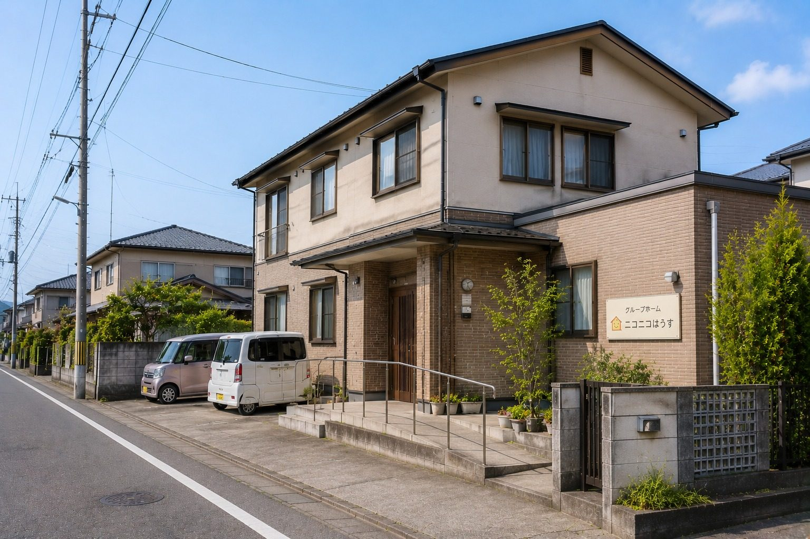
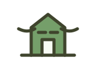

ご本人・ご家族の方へ
まだ入居時期が決まっていない段階でも、今の不安や生活状況をお聞かせください。
Guide
見学や相談は、入居を急いで決めるためのものではありません。今の状況を整理しながら、必要な確認を一つずつ進めます。

Flow
ご本人、ご家族、相談支援専門員の方など、どなたからのご相談でも大丈夫です。
最初の段階で、入居時期や支援内容がすべて決まっている必要はありません。今の生活状況、困っていること、気になっていることを伺いながら、必要な確認を進めていきます。
お問い合わせ電話またはメールで、現在の状況や相談したい内容をお知らせください。

状況の確認ご本人の生活状況、必要な支援、希望時期などを確認します。

見学・面談実際の雰囲気を見ながら、ご本人に合うかを一緒に確認します。
関係機関との調整相談支援専門員やご家族と、必要な手続きや支援内容を確認します。

利用開始に向けた準備持ち物、生活上の注意点、連絡方法などを確認し、無理なく始められるよう整えます。
まだ入居時期が決まっていない段階でも、今の不安や生活状況をお聞かせください。
空き状況、支援内容、見学調整など、関係機関の方からの確認にも対応します。
生活の場であるため、日時を調整したうえで、落ち着いてご案内します。
Before contact
最初の相談では、すべてが整理されていなくても大丈夫です。入居時期、支援内容、費用のことなどは、お話を伺いながら一緒に確認していきます。
入居時期が未定でも相談できます。
ご本人がまだ見学に前向きでない段階でも、ご家族だけで相談できます。
必要な支援が整理できていなくても、現在の生活状況から一緒に確認できます。
関係機関の方からの事前確認も可能です。
空き状況や見学可能日だけの確認もできます。
よくある質問
入居は、ご本人の暮らしに関わる大切な選択です。急いで決めるのではなく、今の状況を一緒に確認しながら進めていきます。
見学だけ、空き状況だけ、関係機関としての確認だけでも大丈夫です。
相談・見学について問い合わせるVisit image
文章だけでは分かりづらい場所の雰囲気を、写真でもお伝えします。
見学前に、共有スペースや居室の雰囲気を少し想像できるようにしています。